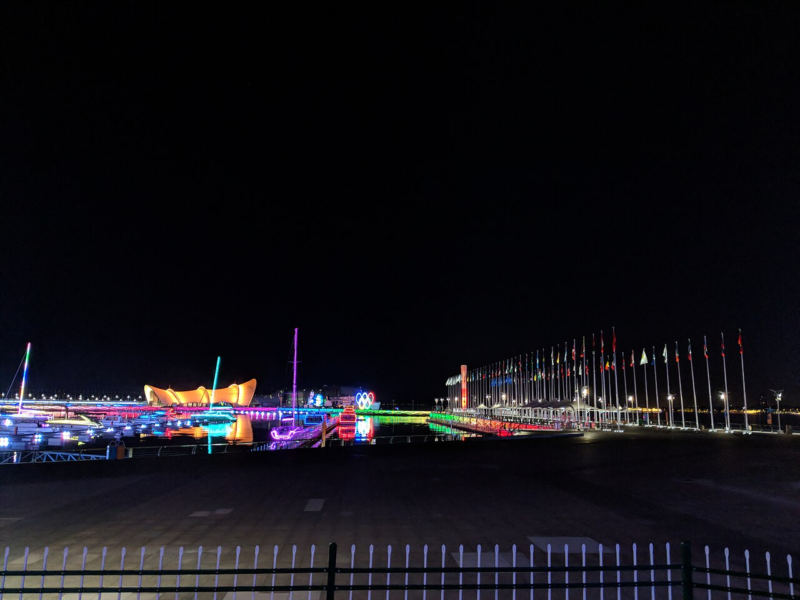
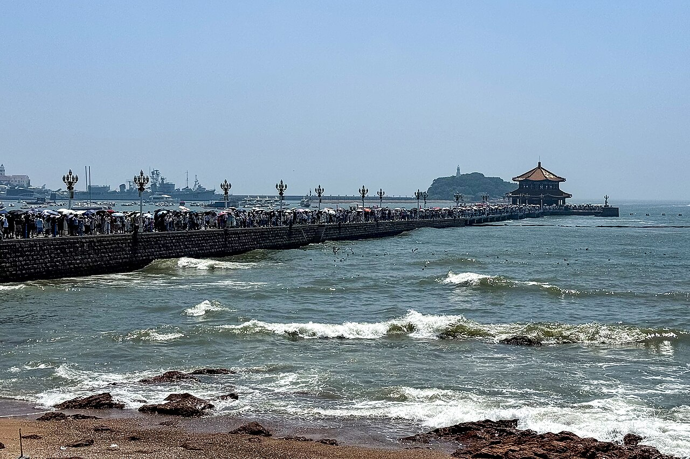
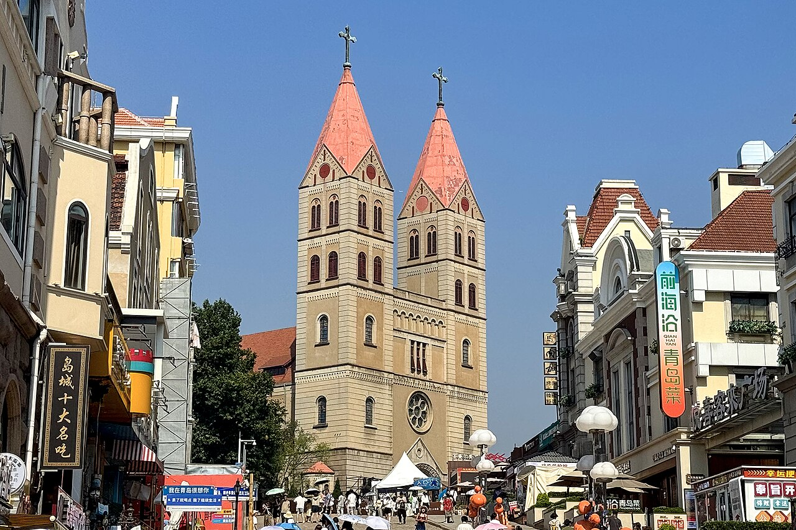
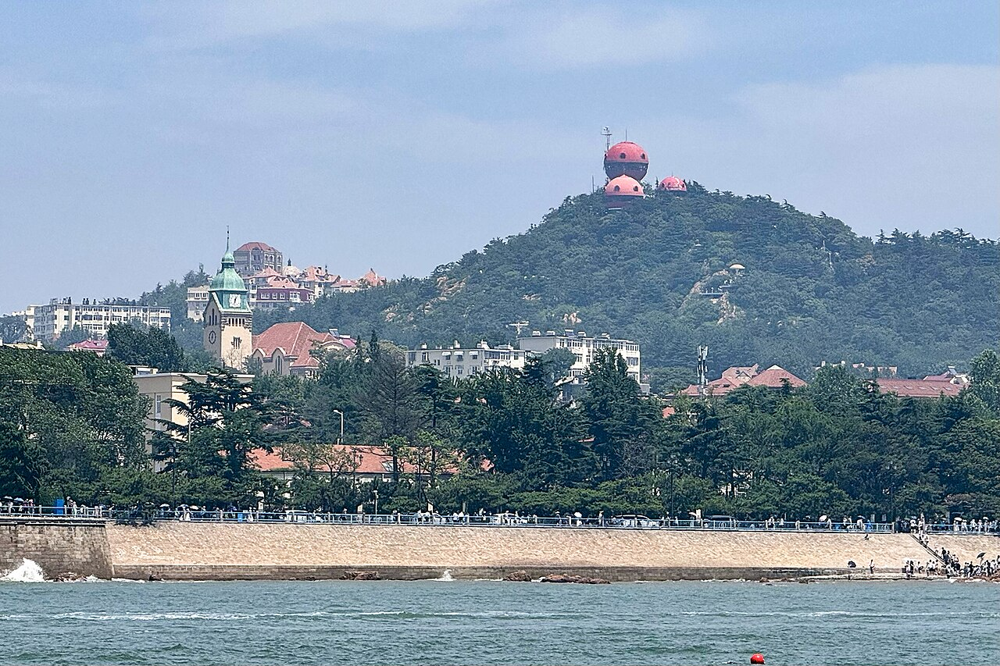
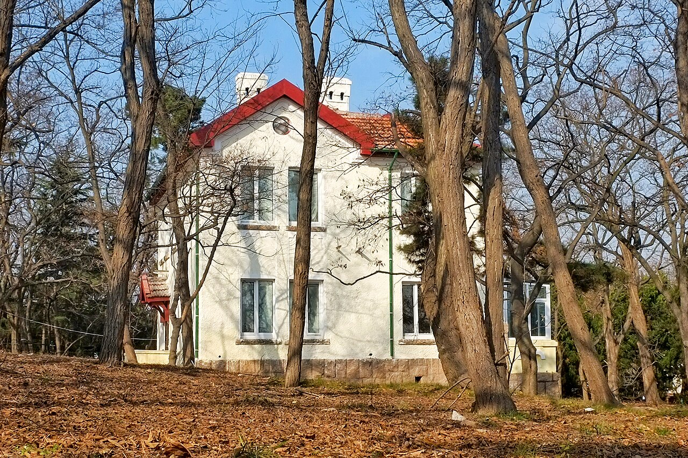
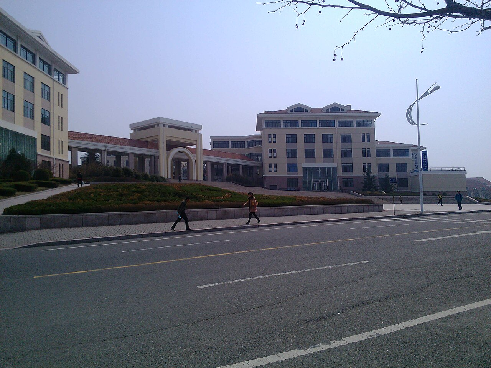
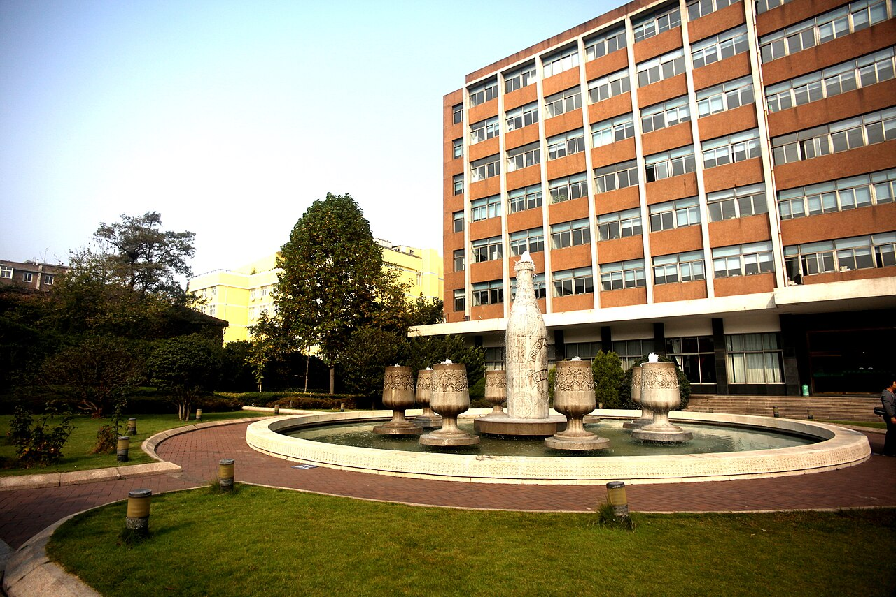

유류할증료·제세공과금 포함 표시. 위탁수하물 포함으로 표시됐으나 무게는 페이지에서 확인되지 않았다.
🏨 숙소 — 크리스탈 오렌지 오사광장 씨뷰점
Crystal Orange Hotel Qingdao May Fourth Square Seaview · 중국 산둥성 칭다오시 스난구 동하이서로 25호 · 오사광장 600m, 해변 100m, 올림픽 요트센터 1.2km
객실: Superior King Room with Side Sea View, 퀸베드 1개, 27~30㎡, 11~22층 — 사이드 씨뷰라 정면 오션뷰는 아니다. 예약 전 객실명을 다시 확인할 것.
가격 (Trip.com, 2026-11-24 확인): 3박 총 318,738원, 세금·수수료 포함, 1박당 약 106,246원. 2인 조식 포함.
평점: 9.6/10, 후기 6,888개, 4성급, 2014년 개업·2024년 리모델링.
취소: 12월 21일 23:00까지 무료 취소, 선결제.
같은 조건의 대안: Atour Hotel May Fourth Square City Hall — 부분 씨뷰, 3박 311,642원, 조식은 별도. 5성급 샹그릴라·인터컨티넨탈은 1박 18만 원대로 예산을 넘는다.
항목
2인 기준
비고
항공권
약 641,400원
1인 최저가 단순 합산, 재확인 필요
숙소 3박
318,738원
조식 2인 포함
항공+숙소 합계
약 960,138원
현지 식사·교통·입장료 별도
가격은 2026년 11월 24일 확인 기준이며 실시간으로 바뀔 수 있다. 현지 식사는 1인당 한 끼 70~90위안(약 13,000~17,000원) 선의 식당을 골랐다.
날씨 — 12월 칭다오
낮 최고 5~6°, 아침·저녁 최저 0~-1°, 하루 평균 2~4°. 비·눈은 거의 없고(월 강수량 10~15mm) 맑은 날이 많다. 다만 바닷바람이 세서 체감은 훨씬 낮다. 서울 11월 말~12월 초 옷차림에 방풍 패딩, 목도리·장갑·모자를 더하는 게 좋다. 실내는 난방이 세니 겹쳐 입고 벗기 편하게.
DAY 1 · 12월 24일(목) — 도착, 동부 해안
공항 → 오사광장 · 올림픽 요트센터

올림픽 요트센터. 사진: Wikimedia Commons
16:40 — 인천 출발, MU0560
17:25 — 칭다오 교동공항(TAO) 도착. 입국·수하물 후 이동.
18:30~19:00 — 호텔 체크인. 공항 → 오사광장은 지하철 8호선 직행 약 40분(쾌속) / 약 60분(일반), 7~9위안. 택시·디디는 50~70분, 150~230위안 선으로 잡을 것. 첫날 밤이라 택시가 편하다.
19:30~20:30 — 오사광장(五四广场)과 올림픽 요트센터(奥帆中心) 야경 산책. 오사광장은 무료, 24시간. 요트센터 부지도 무료, 라이트쇼는 19:30~20:00 전후에 보는 게 좋다(정확한 시간은 현장 확인).
20:30 — 저녁은 요트센터 근처에서. 카오안(靠岸, 청원로 1호) — 해산물 찜, 8가지 해산물 한 접시 ‘팔선과해’, 1인 약 90위안. 또는 뤼스구샤오셴(吕氏焗小鲜, 청하이1로 24호) — 도자기 냄비에 구운 장어·새우, 1인 약 72위안. 겨울엔 따뜻한 냄비 요리가 잘 맞는다.
⚠️ 첫날은 이동만으로도 피곤하다. 도착 날 저녁은 호텔에서 도보권으로만 잡았다. 오사광장에서 구시가지로 넘어가지 말 것 — 그건 내일 일정이다.
DAY 2 · 12월 25일(금) — 크리스마스, 구시가지
잔교 · 성당 · 신호산 · 맥주박물관

잔교. 사진: Wikimedia Commons
09:00 — 호텔 조식 후 지하철·택시로 구시가지 이동(약 20~30분). 잔교(栈桥) 산책. 무료. 11월 15일~3월 31일은 겨울 갈매기가 오는 시기라 갈매기 보기가 이 계절의 볼거리다.
10:30 — 성 미카엘 대성당(圣弥厄尔天主教堂, 저장로 15호). 입장료 10위안, 금요일 08:30~17:00(마지막 입장 16:30). 크리스마스는 중국의 공휴일이 아니라 정상 운영한다.
12:00 — 점심은 중산로에서. 춘허러우(春和楼, 중산로 146호) — 1891년 창업 산둥 요리, 1인 약 80위안. 또는 민궈하이 해산물 교자(民国海·海鲜水饺, 중산로 31호) — 해산물 교자, 09:00~21:30, 1인 약 70위안.
14:00 — 신호산공원(信号山公园, 룽산로 16호). 공원 무료, 전망탑 10위안, 08:00~17:00. 20분 정도 오르면 칭다오 구시가지와 바다가 한눈에 보인다. 일몰(16:45 전후)에 맞춰 가면 좋다.
15:30 — 칭다오 맥주박물관(青岛啤酒博物馆, 덩저우로 56호). 입장료 60위안, 08:30~17:00, 생맥주 시음 포함. 2~3일 전 Trip.com에서 시간 지정 예약을 권한다.
18:30 — 저녁은 타이둥 쪽으로. 촨거위수이쟈오(船歌鱼水饺) — 오징어·고등어 어만두, 1인 약 85위안. 구시가지에서 택시로 짧은 거리다.

성 미카엘 대성당. 사진: Wikimedia Commons

신호산공원. 사진: Wikimedia Commons
⚠️ 잔교 끝 회란각(回澜阁)은 2026년 10월 13일부터 보수 공사 중으로, 12월 중순 완공 예정이라 12월 24일 재개장 여부는 미확인이다. 잔교 산책은 하되, 회란각 입장은 현장에서 확인하고 계획하지 말 것. 크리스마스 마켓(슈테른엔마르크트 등)도 매년 열리는 전통은 확인됐으나 2026년 날짜는 미확인이라, 있으면 보고 없으면 넘어가는 정도로만 둘 것.
DAY 3 · 12월 26일(토) — 남쪽 해안, 팔대관
팔대관 · 2호 해수욕장 · 해안 산책

팔대관. 사진: Wikimedia Commons
09:30 — 호텔 조식 후 팔대관으로. 호텔에서 택시 약 10~15분.
10:00~12:00 — 팔대관(八大关) 산책. 거리 자체는 무료, 24시간. 독일·유럽식 별장 거리로, 겨울엔 사람이 적어 사진 찍기 좋다. 화스러우(花石楼, 황하이로 18호)는 08:30~17:30, 입장료는 자료마다 8.5위안~30위안으로 엇갈려 10~30위안으로 잡을 것.
12:00 — 2호 해수욕장 해안 산책. 겨울엔 수영은 안 하지만 바닷바람 맞으며 걷기 좋다. 방풍 패딩 필수.
14:00 — 팔대관 안 카페에서 쉬어가기. Sof Coffee(산하이관로·쥐융관로 교차점 근처, 2호 해수욕장 근처) — 커피·토스트, 1인 약 100위안. 저녁 식사 장소는 아니다.
16:00 — 호텔 쪽으로 돌아와 잠시 휴식. 일몰이 16:45라 해 질 무렵엔 실내로.
18:30 — 마지막 저녁. 더차오 해산물(德超海鲜, 홍콩중로 65호) — 해산물 플래터, 해장(海肠) 밥, 1인 약 71위안. 오사광장·요트센터 근처라 호텔에서 가깝다.
⛰️ 라오산 당일치기는 ‘대안’으로만
라오산은 이 일정에 넣지 않았다. 이유는 겨울 조건 때문이다.
타이칭 케이블카는 2026년 4월 24일부터 운휴 중이고 재개 소식이 없다. 타이칭 코스는 도보만 가능해 약 4시간, 중간 구간이 가파르다.
쥐펑(정상 1,132.7m) 케이블카는 겨울 운영 여부가 미확인이다. 입장권도 자료마다 130~210위안으로 엇갈려 단일 가격으로 확정할 수 없다.
가는 길이 시내에서 약 1시간, 개장 07:30~17:00, 일몰 16:45라 한 개 구역만, 07:30 출발해야 한다.
그래도 가고 싶다면 26일 아침 07:30 출발, 지하철 4호선 다허둥역 → 다허둥 방문자센터 → 셔틀버스, 한 개 구역(타이칭 또는 쥐펑)만 보고 16:00 전에는 하산할 것. 팔대관 일정은 그날 포기해야 한다.

라오산. 사진: Wikimedia Commons
DAY 4 · 12월 27일(일) — 아침, 귀국
호텔 조식 → 공항
06:30~07:00 — 호텔 출발. 비행기가 10:00라 공항엔 08:00 도착을 목표로 한다. 지하철 8호선 첫차(약 06:10) 또는 택시·디디가 안전하다. 이른 아침 지하철 쾌속 시간은 당일 확인이 필요하다.
08:00 — 교동공항 도착, 체크인·출국.
10:00 — MU2033 출발 → 12:15 인천 도착.
27일은 오전 비행기라 관광 일정은 없다. 전날 밤에 짐을 싸두고, 아침은 호텔 조식으로 가볍게 먹고 바로 출발하는 게 맞다. 성당은 일요일엔 관광객 입장이 12:00부터라 어차피 못 간다.

칭다오 맥주박물관(2일차). 사진: Wikimedia Commons
먹거리 정리
언제
식당
위치
메뉴 · 가격
12/24 저녁
카오안(靠岸)
청원로 1호, 요트센터 근처
해산물 찜, 팔선과해 · 1인 약 90위안
12/24 저녁 대안
뤼스구샤오셴(吕氏焗小鲜)
청하이1로 24호
도자기 냄비 장어·새우 · 1인 약 72위안
12/25 점심
춘허러우(春和楼)
중산로 146호
산둥 요리, 1891년 창업 · 1인 약 80위안
12/25 점심 대안
민궈하이 해산물 교자
중산로 31호
해산물 교자 · 1인 약 70위안
12/25 저녁
촨거위수이쟈오(船歌鱼水饺)
구시가지·타이둥 쪽
어만두 · 1인 약 85위안
12/26 저녁
더차오 해산물(德超海鲜)
홍콩중로 65호
해산물 플래터, 해장 밥 · 1인 약 71위안
가격은 검색 기준 평균으로, 메뉴·인원에 따라 달라진다. 해산물은 시세라 주문 전 가격을 확인하는 게 안전하다. 식당 주소는 검색에서 확인된 것만 적었다.
준비물 · 주의사항
옷: 방풍 패딩, 목도리·장갑·모자, 기모 바지, 방한화. 실내는 난방이 세니 얇은 옷 여러 겹.
건조: 립밤·보습크림, 핫팩. 강수량은 적지만 공기가 건조하다.
결제: 알리페이·위챗페이를 미리 준비하면 편하다. 현금도 소액 준비.
통신: eSIM 또는 로밍, VPN이 필요할 수 있다. 구글 지도는 중국에서 제한이 있으니 바이두·아마ap(高德) 지도를 함께 쓸 것.
비자: 한국 여권은 중국 무비자 입국이 가능하다고 알려져 있으나, 출국 전 최신 입국 조건을 다시 확인할 것.
동선 원칙: 24일 동부, 25일 구시가지, 26일 남쪽 해안 — 하루에 동·서부를 오가지 않는다. 호텔은 3박 내내 같은 곳이다.
미확인 항목: 회란각 재개장 여부, 라오산 입장권·케이블카 겨울 운영, 크리스마스 마켓 2026년 날짜, 27일 이른 아침 지하철 쾌속 시간. 이 네 가지는 출발 직전 다시 확인해야 한다.